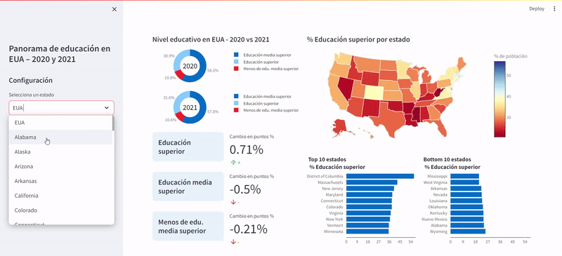

Dashboard: USA Education 2020 vs 2021
The dataset
Information about the estimated population of people belonging to various age groups who have specific levels of education. Aggregated information at the level of US congressional districts for specific years.
- Year
- Congressional district
- Individuals with a Bachelor's degree or higher education
- Individuals with highschool diploma or some degree
- Individuals with less than high school diploma
Where each row represents the partition of the population in each Congressional district by level of education, by year (2020 and 2021). The educational level refers to the equivalent of higher education, high school education and less than high school education in Mexico.
Questions to answer
- What is the distribution of education in the country (2020 and 2021)?
- What is the top 5 with the highest proportion of individuals with higher education (2020 and 2021, congressional districts and states)?
- Which is the bottom 5 with the lowest proportion of individuals with higher education (2020 and 2021, congressional districts and states)?
- What is the top 5 with the highest proportion of individuals with less than a high school education (2020 and 2021 congressional districts and states)?
- What is the bottom 5 with the lowest proportion of individuals with less than a high school education (2020 and 2021, congressional districts and states)?
- What are the regions with the largest percentage increase in higher education from 2020 to 2021 (congressional districts and states)?
- What are the regions with the lowest percentage increase in higher education from 2020 to 2021 (congressional districts and states)?
Proposed solution
Excel reports
Static Excel reports showing comparative graphs and tables that answer the questions posed by state, congressional district and year.
Interactive Dashboard in python with streamlit
Interactive dashboard that addresses the questions posed regarding states by year and displays complementary information on proportions by educational levels.
Data quality and cleaning
The following data quality check was performed as shown in the notebook Educacion.ipynb:
- Missing data
- Duplicates and unique values in Year and Congressional District
- Numerical value ranges
The same procedure was done in Excel using Power Query, as can be seen in this Excel file.
Data transformation
The following data transformation was performed as shown in the notebook Educacion.ipynb:
- Map state codes to state name (AK->Alaska)
- Aggregate education data by state
- Create columns with proportions (%) by educational level by state by year
- Calculate percentage point difference from 2020 to 2021 by education level by state
The same procedure was done in Excel using Power Query, as can be seen in this Excel file.
Answer to questions
All the questions posed are answered by the Excel reports contained in the PDF file: Educacion.pdf. These reports have a similar format to the following images:
These reports have conditional formatting which facilitates the reading of the report and highlights the comparison between the different states and congressional districts mentioned in the pivot tables.
Dashboard in python with streamlit
The python dashboard answers all the questions posed regarding the states and displays additional information such as:
- Top 10 instead of Top 5 states for educational levels by selected year
- % Increase / Change from 2020 to 2021 for the three levels of education
- Pie chart for educational level distribution for the USA and all states
- Interactive map representing the percentages of the selected educational level by state and selected year.
Data source
Data source: https://www.kaggle.com/datasets/mittvin/u-s-census-dataset-education-finance-industry/data
Original license of the data: CC0: Public Domain